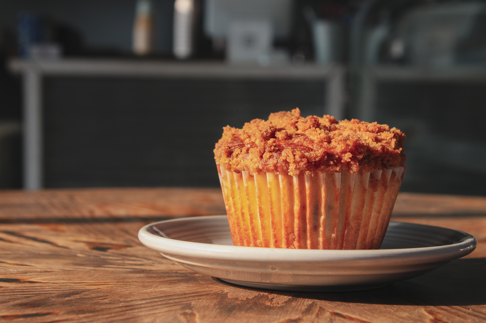

제과
종류
레시피
재료
재료
치즈머핀

1. 재료
버터 50g
설탕 40g 박력분 80g 황치즈 10g 소금 한꼬집
2. 치즈소스 만들기 재료 우유 80g -> 90g 사용 체다치즈 2장 파마산치즈 30g -> 40g 사용
3. 황치즈머핀 반죽 만들기 재료 계란 150g -> 3개 사용 설탕 140 박력분 170g -> 160g 사용 버터 130g 황치즈가루 50g -> 60g 사용 베이킹파우더 6g -> 7g 사용